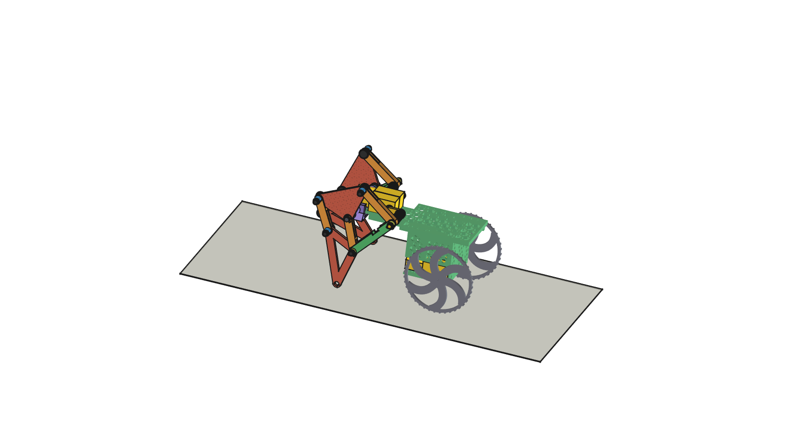
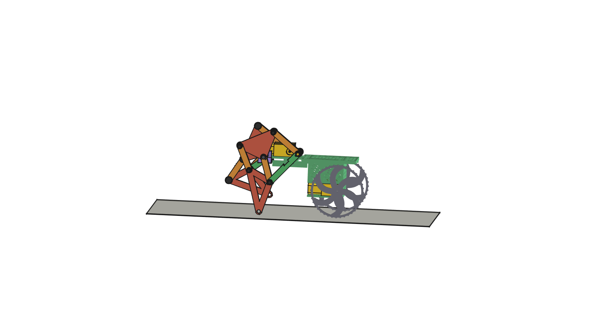
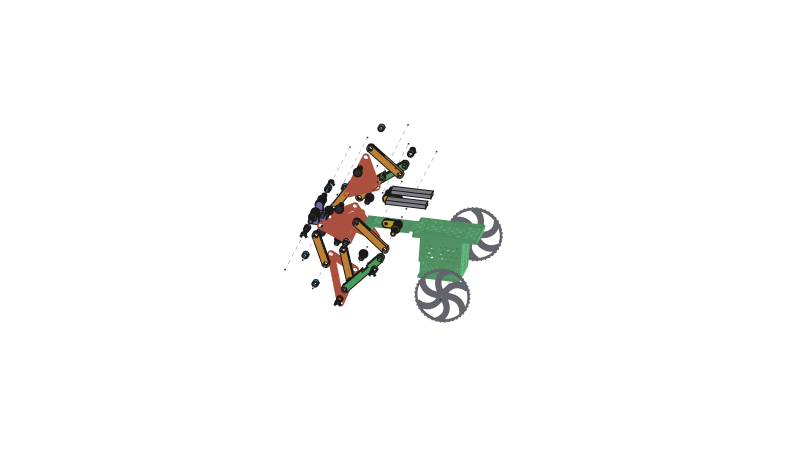

WOBOT is a hybrid walking-and-rolling robot — two Theo Jansen-linkage legs in back, two wheels up front, driven by four small gear motors. We designed and simulated it ourselves in FreeCAD, 3D print it, and sell it to help fund our desktop MRI build.

Two Jansen-linkage legs and two wheels share one Rev60A honeycomb chassis, each with its own yellow TT gear motor — four motors in total.

The legs use a Theo Jansen linkage scaled to 1.2× the "Holy Numbers" — the classic proportions that give a Jansen mechanism its smooth, natural foot path.

Every part — rods, triangles, clips, collars, the chassis itself — is modeled for FDM 3D printing, checked for a full 360° motion sweep with zero collisions.
Each leg motor spins a cam pin that acts as the crank of a Jansen linkage — a chain of rods and triangle plates that converts simple rotation into a stepping motion.
The linkage geometry naturally traces a flat-bottomed loop: the foot stays on the ground for about 41% of each rotation, lifting about 25 mm to clear the next step.
The front wheels are scaled so their rim touches the same ground plane as the feet, and run at about 52% of the leg motors' speed to keep the robot moving evenly.
| Path metric | As built | Ideal Jansen (1.2×) |
|---|---|---|
| Flat ground stroke | ~64 mm | 68.6 mm |
| Time each turn on the ground | 41% | 43% |
| Foot lift | 24.6 mm | 27 mm |
Proceeds from WOBOT go straight toward what Community MRI Project's build needs most right now: a large-format 3D printer and the magnets for our scanner's Halbach array.